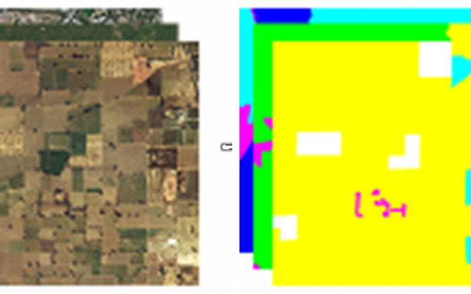
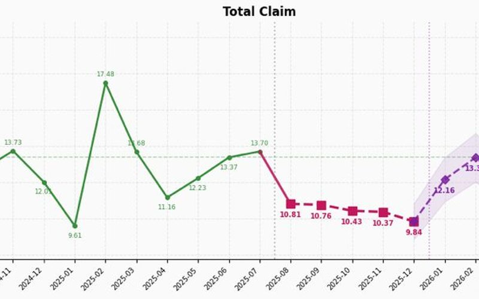
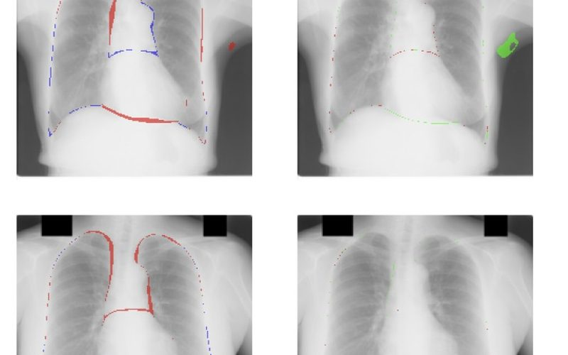
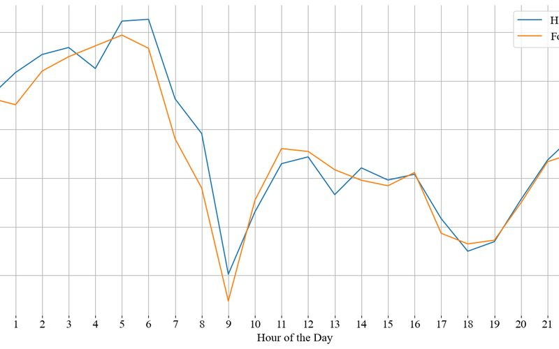
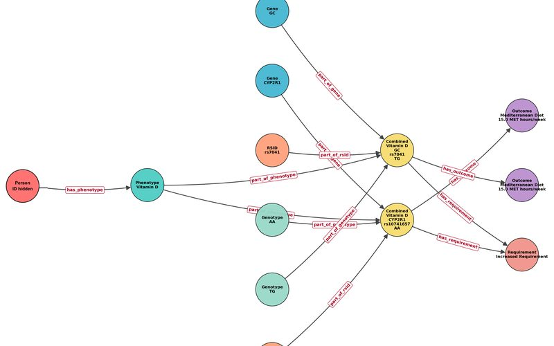
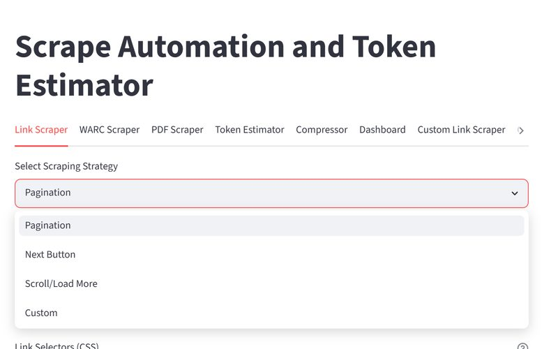
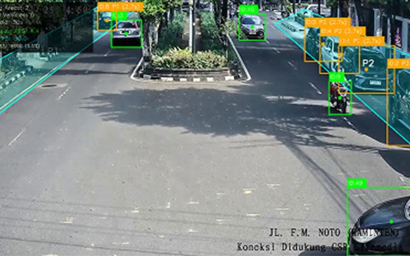
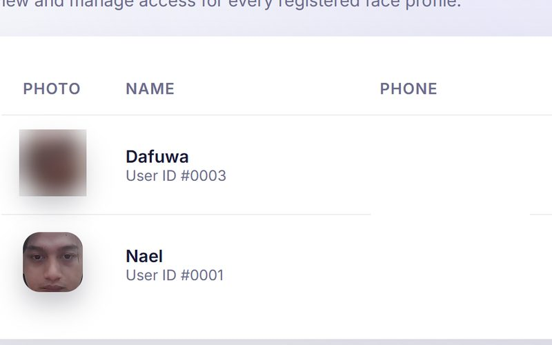

01
Satellite Land-Cover Segmentation
Stratified splitting for imbalanced classes on DeepGlobe (7 classes). DeepLabV3+ with test-time augmentation reached 83.9% pixel accuracy.
Kaggle notebook →ナイルファーズ
AI Engineer / Data Scientist
I build AI that people actually use: computer vision, forecasting, and LLM / RAG systems. Currently an AI engineer intern at Kalbe Farma. Computer Science, Universitas Gadjah Mada (GPA 3.87 / 4.0, cum laude).

01
Stratified splitting for imbalanced classes on DeepGlobe (7 classes). DeepLabV3+ with test-time augmentation reached 83.9% pixel accuracy.
Kaggle notebook →
02
Frequency × severity decomposition on 19 months of data, forecast to the end of 2026. 1st place, MCF ITB 2026 Data Science Competition.
GitHub →
03
Lungs and heart segmentation: U-Net vs DeepLabV3+ across MobileNetV3 encoders, then CRF-as-RNN refinement. Paper accepted at ICTIS 2026 (Springer).
GitHub →
04
Hourly speeds for 934 London road segments, one model per road. Random Forest was best of five models (sMAPE 8.18).
GitHub →
05
Document ingestion, persistent conversational memory and LLM tracing at Kalbe Farma. Ingestion ~1.5 min → ~8 s per report; ~4× faster memory writes.
Internal project (no public code)
06
Streamlit app for scraping links, web pages and PDFs across four pagination styles, built for the Sahabat-AI data effort at GoTo Financial (600K+ files collected).
GitHub →
07
YOLOv8 + ByteTrack on street CCTV with a 30-second dwell rule; YOLOv8n runs at ~20 FPS. 1st place, RISTEK Datathon 2023.
GitHub →
08
Webcam recognition with InsightFace (ArcFace embeddings), an admin dashboard and recognition logs with CSV export.
GitHub →More on GitHub: datachat · fall detection · telecom churn · NihonGo (Japanese flashcards)
2026.02 – now
Retrieval, memory, observability and Kubernetes deployment for production RAG chatbots.
2026.01 – now
Mentoring students for AI olympiad competitions.
2024.09 – 2025.03
Large-scale data collection for the Sahabat-AI LLM: 600K+ PDF/WARC files (5B+ tokens) with the team.
2024.01 – 2025.07
Three undergraduate courses over four semesters.
Universitas Gadjah Mada, Computer Science, 2022.08 – 2026.03 · GPA 3.87 / 4.0 (cum laude) · TELADAN full scholarship, Tanoto Foundation
Open to AI / data roles in Japan. 日本でのAI・データ分野のお仕事を探しています。